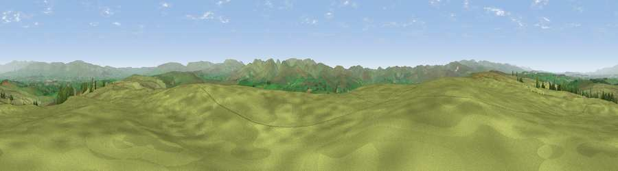

Knott
#7583 in England · top 28% of its area beats it · near OrtonWhere it is
The exact computed spot (NY 65078 09123). Click the marker for map links.
The view, rendered

A 360° render of this exact spot computed from the terrain model, tree cover and land cover — summer colours, afternoon light, calibrated against photographs of famous viewpoints. Real trees, hedges and buildings will differ in detail.
The panorama
Grey silhouette: terrain skyline in each direction (720 bearings, Earth curvature and refraction included). Dashed green: skyline with trees (+15 m) and buildings (+8 m) as obstacles. Blue strip: how far the ground is visible on each bearing.
Where the view opens
Wedge length = distance to the farthest visible ground on that bearing (vegetation-aware). Rings at 10, 25 and 50 km.
What fills the view
96% grassland · 3% woodland ·
Angular shares of the visible panorama (visual magnitude), not map area. Landscape diversity 0.08 (0–1 Shannon).
Key numbers
More beautiful places nearby
The staircase of upgrades: each row has a higher view potential than everything closer. Driving times are estimates from straight-line distance, calibrated against real road routing — check an actual route before setting out.
| Place | Direction | Drive | Score |
|---|---|---|---|
| Knott | WNW · 0 km | ~1 min | 68.2 |
| Long Scar Pike [Coalpit Hill] | WNW · 6 km | ~13 min | 68.9 |
| Viewpoint near Crosby Garrett | E · 7 km | ~15 min | 69.3 |
| Viewpoint near Tebay | SSW · 8 km | ~16 min | 71.8 |
| Viewpoint near Newbiggin on Lune | SSE · 9 km | ~18 min | 72.5 |
| Blease Fell | SSW · 9 km | ~18 min | 73.3 |
| Uldale Head | S · 9 km | ~18 min | 74.0 |
| Green Bell | SSE · 9 km | ~18 min | 75.2 |
54.47625, -2.54043 · source: dobih hill · position refined by local search. Computed location — check access rights before visiting.